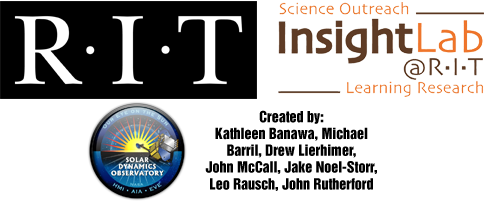
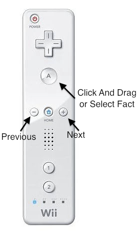
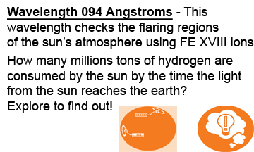
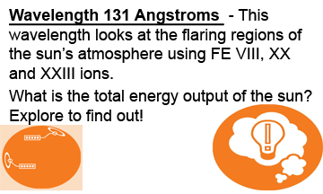
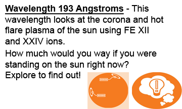
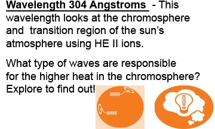
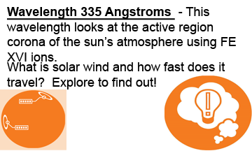
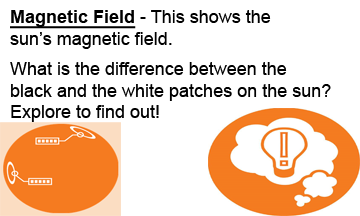

<html>
    <head>
        <title>Digital Solar Explorer</title>
        <script src="https://www.google.com/jsapi?key=ABQIAAAABjkoVNxrUKLrMb3R4e622hQVAqweqs8OVHTlI4jS7QI7twpR0BT6_pL5kXj0AqD8sNbpcH68KcgY-g"> </script>
        <script src="shortcut.js" type="text/javascript"></script>
        <script type="text/javascript">
            //Global Variables
            var ge;
            var networkLink;
            //List of Files to Display (.kml or .kmz)
            var kmlfiles = new Array("","094.kmz","131.kmz","193.kmz","304.kmz","335.kmz","Magneto.kmz");
            var waveImgs = new Array("","wave094_5.png","wave131_5.png","wave193_5.png","wave304_5.png","wave335_5.png","waveMAG_5.png");
			var kmlIndex = 1;
            var balloon;
			var startupDone1 = false;
			var startupDone2 = false;
			
            //load google api
            google.load("earth", "1");
            
            function grabFocus(evt) {
                //Compatible with IE on Windows and Safari/Chrome on OSX
                window.focus();
            }
            window.onmouseup=grabFocus;
            
            function init() {
                //Once Google Earth Script Has inited, load into the map3d div
                //then call initCB
                google.earth.createInstance('map3d', initCB, failureCB);
                
            }
            
            function initCB(instance) {
                ge = instance;
                
                ge.getLayerRoot().enableLayerById(ge.LAYER_TERRAIN, false);
                
                ge.getOptions().setAtmosphereVisibility(false);
                
                ge.getWindow().setVisibility(true);
				
                //Add Black Overlay so you don't see the earth
				var link = ge.createLink('');
                var href = location.href + 'black.kml';
                link.setHref(href);
                var baseLink = ge.createNetworkLink('');
                baseLink.set(link, true, false); // Sets the link, refreshVisibility, and flyToView                
                ge.getFeatures().appendChild(baseLink); 
                
                //Load the Default KKL file
				loadKML(kmlfiles[kmlIndex]);
                
                //When the mouse is not click the earth, grab focus back to the window
                google.earth.addEventListener(ge.getGlobe(), 'mouseup', grabFocus);
                
                //Disable Double Clicing, So that Zoom will not effect the page
                google.earth.addEventListener(ge.getGlobe(), 'dblclick', function (event) { event.preventDefault(); });
                
				
                                        // + ''

				showHelp();
				
                
            };
			
			function showHelp()
			{
			
				//Create the Information Balloon
                intBalloon = ge.createHtmlStringBalloon('');
				intBalloon.setContentString(
                                         '<p>'
                                         + ''
                                         + '<br>'
                                         + '<br><button onClick = "closeBalloon()" style="background-image: url(beginbutton.png);height: 36px; width:144px;margin-left:55px;"></button>'
										 + '</p>'
                                         );
                //Show the Balloon
				ge.setBalloon(intBalloon);
				intBalloon.setMinHeight(625);
				intBalloon.setMinWidth(300);
				
			};
			
			function closeBalloon()
			{
				ge.setBalloon(null);
				if (startupDone1 == false)
				{
					startupDone1 = true;
				
					//Create the Information Balloon
					intBalloon2 = ge.createHtmlStringBalloon('');
					intBalloon2.setContentString(
											 '<p>'
											 + ''
											 + '<br><button onClick = "closeBalloon()" style="background-image: url(ContButton.png);height: 36px; width:144px;margin-left:55px;"></button>'
											 + '</p>'
											 );
					//Show the Balloon
					ge.setBalloon(intBalloon2);
					intBalloon2.setMinHeight(325);
					intBalloon2.setMinWidth(375);
				}
				
			}
            
            function failureCB(errorCode) {
                
            }
            
            
            function removeKML()
            {
                if(networkLink != null)
                {
                    ge.getGlobe().getFeatures().removeChild(networkLink); 
                }
            }
            
            function loadKML(kml){
                //remove the last file before loading the new kml
                removeKML();
                var link = ge.createLink('');
                //var href = location.href + kml;
				var href = "http://insight.cis.rit.edu/sphere/dse/" + kml;
                link.setHref(href);
                
                networkLink = ge.createNetworkLink('');
                networkLink.set(link, true, false); // Sets the link, refreshVisibility, and flyToView
                
                ge.getFeatures().appendChild(networkLink); 
            }
            
            function loadKMLIndex(kindex){
                //Make sure that the kml index number being called is is within the array
                if(kindex >= 0 && kindex < kmlfiles.length)
                {
                    loadKML(kmlfiles[kindex]);
                    console.log("Info: Loading Index:%d file:%s",kindex,kmlfiles[kindex]);
					setUpWave();
                }
                else
                {
                    console.log("Error: Tried Loading Invalid Index:%d",kindex);
                }
            }
            
            function previousKML(){
                //Goto Previous KML
                kmlIndex--;
                //If we were at 1 or 0 go to the end of the kml files
                if(kmlIndex <= 0)
                {
                    kmlIndex = kmlfiles.length - 1;
                }
                loadKMLIndex(kmlIndex);
				
				
            }
            
            function nextKML(){
                //Goto Next KML
                kmlIndex++;
                //If Next Index is greater than the number of files
                //go back to number 1
                if(kmlIndex >= kmlfiles.length)
                {
                    kmlIndex = 1;
                }
                loadKMLIndex(kmlIndex);
				
				
				
				
            }
            
			
			function setUpWave()
			{
				
				if (kmlIndex == 1)
				{
					//Create the Information Balloon
					intBalloon2 = ge.createHtmlStringBalloon('');
					intBalloon2.setContentString(
											 '<p>'
											 + ''
											 + '<br><button onClick = "closeBalloon()" style="background-image: url(ContButton.png);height: 36px; width:144px;margin-left:55px;"></button>'
											 + '</p>'
											 );
					//Show the Balloon
					ge.setBalloon(intBalloon2);
					intBalloon2.setMinHeight(325);
					intBalloon2.setMinWidth(375);
				}
				else if (kmlIndex == 2)
				{
					//Create the Information Balloon
					intBalloon2 = ge.createHtmlStringBalloon('');
					intBalloon2.setContentString(
											 '<p>'
											 + ''
											 + '<br><button onClick = "closeBalloon()" style="background-image: url(ContButton.png);height: 36px; width:144px;margin-left:55px;"></button>'
											 + '</p>'
											 );
					//Show the Balloon
					ge.setBalloon(intBalloon2);
					intBalloon2.setMinHeight(325);
					intBalloon2.setMinWidth(375);
				}
				else if (kmlIndex == 3)
				{
					//Create the Information Balloon
					intBalloon2 = ge.createHtmlStringBalloon('');
					intBalloon2.setContentString(
											 '<p>'
											 + ''
											 + '<br><button onClick = "closeBalloon()" style="background-image: url(ContButton.png);height: 36px; width:144px;margin-left:55px;"></button>'
											 + '</p>'
											 );
					//Show the Balloon
					ge.setBalloon(intBalloon2);
					intBalloon2.setMinHeight(325);
					intBalloon2.setMinWidth(375);
				}
				else if (kmlIndex == 4)
				{
					//Create the Information Balloon
					intBalloon2 = ge.createHtmlStringBalloon('');
					intBalloon2.setContentString(
											 '<p>'
											 + ''
											 + '<br><button onClick = "closeBalloon()" style="background-image: url(ContButton.png);height: 36px; width:144px;margin-left:55px;"></button>'
											 + '</p>'
											 );
					//Show the Balloon
					ge.setBalloon(intBalloon2);
					intBalloon2.setMinHeight(325);
					intBalloon2.setMinWidth(375);
				}
				else if (kmlIndex == 5)
				{
					//Create the Information Balloon
					intBalloon2 = ge.createHtmlStringBalloon('');
					intBalloon2.setContentString(
											 '<p>'
											 + ''
											 + '<br><button onClick = "closeBalloon()" style="background-image: url(ContButton.png);height: 36px; width:144px;margin-left:55px;"></button>'
											 + '</p>'
											 );
					//Show the Balloon
					ge.setBalloon(intBalloon2);
					intBalloon2.setMinHeight(325);
					intBalloon2.setMinWidth(375);
				}
				else if (kmlIndex == 6)
				{
					//Create the Information Balloon
					intBalloon2 = ge.createHtmlStringBalloon('');
					intBalloon2.setContentString(
											 '<p>'
											 + ''
											 + '<br><button onClick = "closeBalloon()" style="background-image: url(ContButton.png);height: 36px; width:144px;margin-left:55px;"></button>'
											 + '</p>'
											 );
					//Show the Balloon
					ge.setBalloon(intBalloon2);
					intBalloon2.setMinHeight(325);
					intBalloon2.setMinWidth(375);
				}
			}
            
            function setup() {
                //Setup Shortcuts For Hot Keys
                
                //Pressing 0 Loads the information Ballon
                shortcut.add("0", function() { ge.setBalloon(balloon); });
				
                //Pressing 1-9 loads the File at that Index
                shortcut.add("1", function() { loadKMLIndex(1); });
                shortcut.add("2", function() { loadKMLIndex(2); });
                shortcut.add("3", function() { loadKMLIndex(3); });
                shortcut.add("4", function() { loadKMLIndex(4); });
                shortcut.add("5", function() { loadKMLIndex(5); });
                shortcut.add("6", function() { loadKMLIndex(6); });
                shortcut.add("7", function() { loadKMLIndex(7); });
                shortcut.add("8", function() { loadKMLIndex(8); });
                shortcut.add("9", function() { loadKMLIndex(9); });
                
                //Pressing up will move to the next File
                //Pressing down will move to the previous File
                shortcut.add("up", function() { previousKML(); });
                shortcut.add("down", function() { nextKML(); });
                shortcut.add("enter", function() { showHelp(); });
            }
            //Call the Setup Function when the window loads
            window.onload=setup;
            
            //Tell the google script to call the init scrip once it has loaded
            google.setOnLoadCallback(init);
            </script>
        
        <style type="text/css">
            body{
                background-color: black;
				cursor: url('sun.cur');
            }
			html,body {
                /* Hide Vertical Scroll Bar in IE Full Screen */
				overflow: hidden;
				Overflow-y: hidden;
			}
            
            div#map3d {
                /* Set the Size/Location of the Google Maps Page */
                position: fixed;
                top: 0px;
                left: 0px;
                height: 100%; 
                width: 100%;
            }
            
            </style>
        
    </head>
    <body>
        <div id="map3d" ></div>        
    </body>
</html>